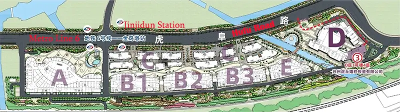

Huqiu
Wedding City虎丘婚纱城
The single largest place on earth to buy a wedding dress — and one of the most confusing. This guide works the whole market for you: where the design-led, couture-grade houses hide, how to shop the value floors without getting burned, and what every budget — from a few hundred yuan to tens of thousands — actually buys.
Read top-to-bottom before you travel, or jump to a section. Bilingual throughout — shop and fabric names are given in 中文 so you can point, search, and ask. Last updated June 2026; verify current shop unit numbers before you go.
One name, two very different places
Before anything else, get this straight — it is the mistake that wastes a whole day.
Suzhou's Huqiu (虎丘, "Tiger Hill") district is the heart of the global wedding-dress trade. It began in the 1980s when a retired photographer opened a single bridal studio below the Tiger Hill pagoda; by the 1990s the lanes held close to a thousand workshops, and the place became the largest bridal production base in China and Southeast Asia.329 Roughly 70% of every wedding dress made in China still passes through here3 — international reporting puts it even higher, with a widely-cited BBC figure of up to 80% of the world's wedding dresses2830 — and a startling number of global brands were born on these racks: the founders of SHEIN, and the bridal e-commerce giants LightInTheBox and JJ's House, all got their start reselling Huqiu gowns abroad, where a $2,000 gown could go for as little as $200.3430

After major fire-safety clearances around 2017–2018, the cramped old workshops were largely demolished and the trade consolidated into a purpose-built, state-run complex.36 So today the name "Huqiu" points at two things, and only one of them is where you want to be:
虎丘婚纱一条街
The Old Street
- The original maze of "shop-front, workshop-behind" houses along 虎丘路, arranged in 非-shaped alleys.
- Cheapest prices, hardest haggling, thinnest materials — the wholesale floor.
- Largely cleared in the 2017–18 safety crackdown; most good names relocated into the new complex.36
- Not your destination for a high-end gown.
虎丘婚纱城
Huqiu Wedding City
- A ¥2.7-billion, 300,000 m², four-storey complex south of Tiger Hill — climate-controlled, 2,000+ free parking spaces.12
- State-built to push the industry toward brands, original design, and regulation — which is exactly what a high-end buyer wants.3
- 400+ established brands, from factory outlets to fashion-week designer houses, under one roof.127
- This is the guide's subject. Address: 虎阜路999号.
The rule: ignore "the street," go to "the City," and within the City, walk straight to the villa zone. The next section shows you the floor plan.
C区 is being renovated this year — call ahead
An official tender published in January 2026 covers a comprehensive overhaul of A区's cylinder building and C区 buildings C1–C12 (façades, walkways, landscaping and public spaces).23 Because C区 is exactly where the high-end houses sit, expect entrances, shop units, or hours to shift during the works. Confirm each brand's current location and whether it's open on WeChat or 大众点评 before you travel.
The map of the City
The complex is laid out by price and prestige. High-end lives in Zone C — the villa street. Memorise this and you can skip 80% of the floor.
The big mall (B1/B2/B3). Strong ready-made and semi-custom. Ground floor priciest; upper floors cheaper. Good for comparison and back-up options.
Mixed brand floor with a sunken plaza, café and food court. A few serious houses on level 1; upper levels lean wholesale.
Convention & leisure centre, still under construction. Nothing to shop yet.


The high-end names
These are the design-led, quality-first houses that come up again and again across Zhihu, Xiaohongshu and the trade press. Treat them as your shortlist — then verify the exact unit on 大众点评 or the shop's WeChat before you walk, because units move. Not chasing couture? §04 maps the value floors and every other budget.

Widely called Suzhou's number-one bridal brand. In-house design team, six appearances at China International Fashion Week, three designers named "China Top-Ten Fashion Designer," and exports to over 30 countries.14151632 The benchmark for original design and finish — this is where you calibrate "what good looks like." Sister label 天玺 (Tianxi) handles Chinese 秀禾/旗袍.1432
A C-zone original-design house that recurs in buyer write-ups alongside the marquee names, with a made-to-measure program and frequent new collections. Worth a look as a high-design alternative if JUSERE isn't your aesthetic — but this is one to confirm on 大众点评/小红书 before relying on it, as it's less documented than the flagship.
A Suzhou-grown couture house whose founder chaired the national bridalwear association; the brand runs its own collections, star dressing and overseas distribution.24 It's named among the C-zone designer brands alongside JUSERE,26 and one industry insider now rates it "near the top tier."25 A serious alternative to JUSERE for original, high-finish gowns — confirm the current unit, as C区 is mid-renovation.
An established name a few doors from JUSERE in the C-zone cluster — and, per buyer accounts, JUSERE staff will often walk you over to it as the more affordable sibling. Solid quality for the money: one buyer was quoted just over ¥2,000 for an off-shoulder floor-length gown. A sensible step-down if the flagship's couture pricing is out of range — though note that one industry insider reckons its standing has slipped in recent years, so judge the current garments on their own merits.1625
Beloved for pattern-making and fit — the rare house that grades length as well as size. Semi-original collections at a notch below couture pricing, with a deep online presence. A strong "design-forward but not five-figure" pick. (Watch for copied "爆款" styles creeping in; favour their own designs.)
One of the old guard from the original street, known for beautifully draping gowns and prestige positioning.916 A heritage label worth seeing for classic, fluid silhouettes — service can run cool, and you'll pay for the name, so judge the garment in hand.
Representative of the smaller designer studios dotted through B3 and the villa street — the kind of independent, original-design rooms where you find a piece that exists nowhere else. GUZI is a named designer label in the City; Story 37 (故事37) and similar studios trade design personality for a friendlier price. Hunt these out once the marquee houses have set your reference point.
Several seasoned buyers make an honest point: if you live in a tier-1 city and your budget is genuinely high-end, the saving on a five-figure couture gown over a good local atelier can be modest once you add travel and remote alterations.16 Huqiu's edge is unbeatable at the upper-mid to lower-high band (≈¥2k–¥6k), in selection (hundreds of original designers in one walk), and in Chinese bridalwear (秀禾/龙凤褂). Go for the range and the design depth — not only the discount.
How to spot a high-design house yourself
Names change; this instinct doesn't. In a sea of near-identical white storefronts, the serious rooms give themselves away:
- It's a standalone villa, or a large ground-floor flagship. Rent tracks prestige here — the best houses pay for the front and the freestanding buildings, exactly like any mall.
- The pieces aren't repeated three stalls down. Ask outright: "这是原创吗？" Exclusive, in-house design is the whole point of paying up. Viral "爆款" copies appear everywhere.
- There's a try-on fee, and they ask you to remove your shoes. Slightly annoying, genuinely a signal — a room protecting heavy hand-beaded samples is a room with heavy hand-beaded samples.
- The staff style you, not just sell to you. At a real house the consultant reads your frame, proposes silhouettes, and advises on hair, veil and accessories — a different experience from "what's your budget?"
- Show pedigree is on the wall. Fashion-week looks, lookbooks, designer credits. Worth confirming, but it's the tell that separates a brand from a booth.
Shopping every budget — where the value lives
The villa houses are the ceiling, not the whole building. The same complex runs from ¥300 racks to ¥30,000 couture — and the value end is where most brides actually buy. Here's how to work it without getting burned.
One rule organises the entire mall: frontage costs money, height saves it. The branded ground-floor shopfronts pay the highest rent and quote the highest prices; walk up a level, or over to the quieter buildings, and the same gown drops.826

The move everyone who's done it recommends
Try in the villas
Then buy the look for less
- Take the silhouette you fell for into the B-zone value floors and find it — or its near-twin — for a fraction of the villa price.33
- Knowing your style up front makes you fast: regulars walk every B-zone shop in a day once they've stopped browsing blind.
Buy, or rent?
Keep it — the default
- Value sweet spot: ¥1,000–2,500 for solid ready-made, ¥2,500–4,000 for design-forward — where most gowns land.31
- You own it, can ship it, and can re-wear or resell. Best if you want the dress, not just the day.
What sub-¥1,000 really buys
Yes, there are ¥300–800 main gowns, and ¥500–600 秀禾 that photograph fine. But the fabric and finish are visibly a tier (or two) down, and every honest buyer says the same: for the gown you'll actually marry in, budget ¥1,000–2,000 and up, and save the rock-bottom racks for an 出门纱 (arrival gown), a toasting change, or a photoshoot piece.11 If you want the genuinely cheapest — think ¥1,000 for three pieces — that lives on the old wedding street (老街), not in the air-conditioned mall; most of those sellers have moved into the City anyway, so only make the trip if cheapest-possible is the entire point.7
A few value names to start with
Xiaohongshu-popular; deal sets seen around ¥1,888 for three — a real step up from old-street ¥600-a-piece quality.7
Long-running B-zone name (listed near B1 205/206/209 — verify the unit). Solid mid-budget racks.34
Big walk-in experience store on the A-zone ground floor — an easy first stop to gauge mid-range styles.34
Densely-hung shops quoting ¥1,000-ish (and bargainable lower). Bargains exist — but inspect fabric and finishing hard; this is where quality varies most.11
For the price ladder in full, the ×0.28 wholesale rule and the haggling playbook, see §09 · The money game. The inspection vocabulary in §06 matters even more at the value end, where corners get cut.
Everything else under this roof
A wedding needs a wardrobe, not a dress — and the City is built to clothe the whole party in one trip. Most of these follow the same value rules: brand frontage on level 1, cheaper and more wholesale as you climb.
The brand-and-amenities A区 is the one-stop floor — gowns, evening wear, 旗袍, 秀禾, menswear, kids' wear, accessories and photo studios all sit here around a sunken plaza with cafés and a food court — while the B区 4th floor concentrates veils, accessories, children's wear and trimmings.76

Coordinated sets in every palette, cheap enough to kit out the whole party — and often bundled into rental packages.34
The shorter, easy-to-move second dress for the banquet and table-toasting rounds — a category in its own right, with dedicated 礼服 shops.11
The fitted one-piece, red-and-gold for weddings. For the embroidered 秀禾服 and 龙凤褂, see §07.7
Suits and tuxedos for the groom and the fathers — menswear (男装) is a standard A-zone category, so the whole party dresses in one trip.6
Dressy 中式 and Western looks for both mothers — easy to match to the couple's palette while you're already here.6
Veils, hairpieces, jewellery and wedding shoes — concentrated on the B区 4th floor and cheap; buy 胸贴 and basics online even cheaper before you travel.26
Flower-girl and page-boy outfits, also up on the B-zone 4th floor with the accessories and trims.26
Photo studios (影楼) and travel-shoot (旅拍) wardrobes share the A-zone — convenient if you're doing your pre-wedding shoot in Suzhou too.7
Whole-wardrobe rental shops, if you'd rather borrow than keep — see the buy-or-rent split in §04.33
Lace, beading, fabric and findings for makers and the trade — bought by the roll, on the B-zone 4th floor.26
Read fabric & construction like a buyer
Under the showroom's deliberately flattering lights every gown sparkles. Quality lives in the materials and the making — learn the vocabulary so you can ask precisely and inspect properly.

The fabric & silhouette glossary
Smooth, weighty, fluid. The classic mermaid fabric — elegant, but shows every line, so fit and undergarments matter.
Crisp and structured. Holds volume — the body behind big ballgown and princess skirts.
Appliqué or all-over. The quality question: is it hand-applied and dimensional, or flat and glued on?
Beads & crystals. Hand-beaded ("重工") is heavier, costlier and catches light far better than printed sparkle.
Dense handcraft — the single biggest legitimate driver of price at the high end. Heft is the giveaway.
Fitted to the knee, then flares. Sculptural and demanding; satin shows the cut best.
Length is a choice: a long 大拖尾 "holds the room" for a big hall; a short one suits movement and lawns.
The hero ceremony dress. The piece to spend your budget and your scrutiny on.
Embroidered two-piece Chinese bridal. Huqiu is exceptional and well-priced here — see 天玺 and dedicated houses.
Densely embroidered jacket-and-skirt. Quality = stitch density and whether it's hand- or machine-worked.
Lighter reception look for table rounds. Many brides buy main + toasting + Chinese as a set.
The hands-on quality check
Pick a sample up, turn it inside out, and run through this. A great house passes every line without flinching.
Put a number on it — the 100-point check
Score each finalist immediately after you take it off, while it's fresh. The weights tell you what actually matters at the high end: a luxurious showroom counts for nothing here. Anything under 80 isn't a high-end purchase, however it's priced.
◆ Disqualifiers, at any price: they won't write the exact style/material/finish into the order · they promise the final gown is "basically the same" but won't document the sample · they push a big discount before they've understood your body, venue or date · loose threads, scratchy lining, a warped hem or shedding beads are waved off as "normal" · they can't say whether the design is original, licensed, buyer-selected or public-market stock.
秀禾服, 龙凤褂 & the art of 中式嫁衣
Huqiu is one of the best places in China to buy Chinese bridalwear — but it runs on a quality language entirely separate from white gowns. Most brides now wear a Chinese piece for the door-leaving and toasting and a gown for the ceremony; many go fully 中式. Learn the vocabulary and you can read value at a glance.
Two garments dominate, and newcomers constantly mix them up — and the difference isn't just decoration, it's two distinct embroidery traditions, cuts and price logics. Suzhou's heritage is 苏绣 (Suzhou embroidery), which makes the City especially strong on 秀禾服; full 中式 ranges sit in many houses, including JUSERE's sister label 天玺 (Tianxi).1014

秀禾服
Xiùhé — the softer one
- Flat embroidery (平绣, usually 苏绣 or 潮绣) — the stitching sits level with the cloth, fine and painterly.2018
- Free motifs & colour: not only dragon-phoenix — peony (wealth), bat ("luck arrives"), lily (harmony), on red, gold and beyond.19
- Looser 马面裙 cut flatters every figure; the wide skirt spreads beautifully for photos.20
- The "小家碧玉" look — gentle and understated. The name was popularised by the 2001 drama 《橘子红了》.20
龙凤褂
Lóngfèng guà — the regal one
- Raised 3-D embroidery (卜心绣 / 钉金绣, Cantonese 粤绣) — gold/silver thread padded to stand off the cloth.1918
- Must show dragon & phoenix in gold/silver on a red ground; the phoenix leads, the dragon is emphasised.19
- Straight 直筒 two-piece (top + skirt) — slimming, and most flattering on a slender frame.18
- Tradition runs strongest in Guangdong / Chaoshan / Hong Kong & Macau, and it's graded by thread density (below).18
The 褂 ladder — how a 龙凤褂 is graded
A hand-embroidered 龙凤褂 is priced by how much of the red ground is covered in gold/silver thread. The rule brides repeat: the less red you can see, the more precious it is. This is the single most useful thing to know before you shop one.
entry · most red
value pick
suits fuller figures
6–8 months
12–18 months
% = share of the red ground covered by gold/silver thread.21 Indicative: a machine-embroidered 龙凤褂 runs only a few hundred to ~¥1,000;18 a 中五福 rents ≈¥3,000–6,000; a 褂皇 rents ¥20,000+, and a fully hand-embroidered custom 褂皇 can reach ¥200,000+.21
At the City, JUSERE's sister label 天玺 carries a full Chinese range (its experience store gives a whole floor to 秀禾/旗袍/龙凤褂), and dedicated houses such as 汉绣红妆 and 兰朵 are repeatedly praised for honest 秀禾 pricing and quality, with 江浙沪 rental available.171112 Realistic Huqiu prices: machine-embroidered 秀禾 from a few hundred to ~¥1,000+; a good hand-worked 秀禾 roughly ¥2,000–6,000 (JUSERE's own run around ¥6k and don't discount); 旗袍 and 敬酒服 are cheap add-ons, and renting is common and far cheaper than buying.1216
The honest high-end note: the absolute apex of the gold-thread 褂皇 tradition is Cantonese / Hong Kong, not Suzhou — Hong Kong's heritage 裙褂 houses and the 潮汕 hand-embroiderers are the benchmark for a museum-grade full-gold 褂.18 Huqiu's real strength is 秀禾服 (苏绣) and accessible-to-upper-mid 龙凤褂. Buy your 秀禾 here with confidence; for a five-figure 褂皇, compare against a Cantonese or HK atelier first.
Buy off the rack, or have it made
Huqiu runs on a "shop in front, factory behind" model — much of the actual sewing now happens at production bases in Anhui.56 Both paths are normal; they trade speed against fit.
Take it today
- Buy the sample (or a fresh-from-stockroom copy) and walk out with it.
- Insist on this where you can — you avoid all shipping risk and "the photo looked different" disputes.812
- Always re-inspect the actual piece they hand you; have them fetch a new one and check it.
- Minor alterations can often be done same-day or within hours.
Made to your measurements
- Cut to your size and chosen fabric, colour and train length — the best route to a clean fit.
- Production typically runs 4–6 weeks; spell out every detail (面料 / 颜色 / 款式 / 尺寸) in writing.
- Collect in person if at all possible; remote alterations across cities are slow and frustrating.
- Couture houses build this in; mid-tier shops may add ~10%.
Research
Build a Xiaohongshu folder of styles you love. Lock silhouette, fabric and rough budget so you walk in with intent.
Choose & order
Decide and place the order — the hard floor. Custom needs the lead time; ready-made still wants margin for alterations.
Make & collect
Production window. Collect in person, re-inspect against your written spec, and try it on before you accept.
Final fit
Hold your weight steady from here. Last tweaks, steam, and pack with your stylist's needs in mind.
Every veteran says the same thing: once the gown is ordered, don't crash-diet or bulk up. A body that changes shape after the measurements are taken means re-alterations, rushed and remote — the most common way a perfect dress goes wrong.
Scripts for designer & couture houses
The pocket phrasebook in §09 covers quick haggling. These are longer messages for a serious appointment — they signal you care about design and workmanship, not the lowest price, which is exactly how the good houses want to be approached.
你好，我想预约看高端主纱／高级定制款。我的重点是原创设计、版型和做工，不是找最低价。请问现在店铺具体位置、试纱费、可试款数和拍照政策是什么？
Hi — I'd like to book an appointment for high-end main gowns / couture. My priorities are original design, fit and workmanship, not lowest price. What's your current location, the try-on fee, how many pieces I can try, and your photo policy?
这件是你们品牌原创设计吗？有没有款号、设计图或系列名？会不会和其他店的公版／买手款撞款？
Is this your brand's own original design? Does it have a style number, sketch or collection name? Is there a risk it's a public-market or buyer-selected style sold by other shops too?
我可以看一下内衬、鱼骨、胸杯、拉链和裙摆收边吗？如果定制，最终成衣这些细节会和样衣一致吗？
May I look at the lining, boning, cups, zip and hem finishing? If I order custom, will the final garment match these details on the sample?
下单前可以把款号、面料、蕾丝／刺绣、修改点、交付日期、修改次数、尾款和售后写进订单吗？样衣照片也可以备注吗？
Before I order, can we write the style number, fabric, lace/embroidery, alterations, delivery date, number of fittings, balance due and aftercare into the contract — and attach the sample photos?
Prices, the wholesale floor & how to haggle
Pricing here is deliberately opaque — a wedding gown is a once-in-a-lifetime, no-repeat purchase, so the incentive is to extract the maximum from each customer. Knowing the structure is your whole advantage.
Rough, post-haggle bands (RMB, indicative and always moving):
Wholesale ≈ 28% of the tag
The opening number is theatre. First-hand buyers are routinely advised to counter at just 20–30% of the asking price (2–3折) and to treat roughly half-price as the realistic ceiling, not the floor — one buyer's worked example counters an opening ¥4,000 with ¥1,000.128 The widely-repeated insider shorthand is that a wholesaler taking five-plus pieces pays around 28% of the ticket (打2.8折), with a solo walk-in's true floor a little above that — so a "¥3,000" gown can really bottom out near ¥1,000–1,200. (A rule of thumb, not a guarantee — and it does not apply to the branded couture houses below.)
◆ The haggling playbook
◆ When not to haggle
The branded couture houses — JUSERE above all — largely hold their prices. Tags are fixed to protect the brand; the most you'll usually see is a discount on selected lines (think ~30% off a marked-down piece), not open bargaining on current designs.16
That's not a rip-off — it's a different product. You're paying for original design, hand-work, fit and service, and the price reflects it.
◆ Pocket phrasebook
Enough Mandarin to point, ask and negotiate. Don't worry about tones — context carries it, and a calculator covers the numbers.
Try-on etiquette & what to bring
A day here is a marathon — hundreds of shops, a lot of walking, a lot of zipping in and out. Show up prepared and you'll try on more, judge better, and enjoy it.
Bring & do
- Seamless underwear + nubra or strapless bra
So necklines and backs sit right — you'll be in and out of many gowns. - Easy layers — a button or zip top, no pullovers
Fast to remove without wrecking your hair or makeup. - Comfortable flats for walking
Shops keep heels to try with; save your feet for the hours of floor. - Light makeup + your wedding-ish hair
Up if you'll wear it up, down if down — it changes the whole look. - A big empty suitcase (26"+)
If buying in person: one main gown can fill it. Bring two if buying a set. - Cash, a sharp friend, and snacks/water
Old-street food is thin; the new complex has a food court in A-zone. - Book couture houses ahead
JUSERE and peers get busy; an appointment gets you the trial styling.1117
Know & avoid
- Expect "no photos" while trying on
Most shops forbid it to protect designs. Don't fight it — buy first, then photograph the gown you've purchased for your stylist.127 - Ask about the try-on fee up front
Heavy-work houses may charge ~¥30–50 (often waived on purchase, or when it's quiet). Ask before you try to avoid friction.81022 - Don't visit on a rainy day
You'll be walking between buildings and dragging hems through puddles — miserable, and it sours the haggling. - Don't reveal your wedding date too early
A date far off can cool the service; a date close signals a serious buyer. Read the room. - Don't trust the showroom mirror alone
Lighting is engineered to dazzle. Always check colour and detail near real daylight. - Don't pile gowns into one negotiation
Price and decide one piece at a time, or you'll over-buy something you don't love.
Getting there & doing it in a day (or two)
The City sits just south of the Tiger Hill scenic area, about 20 minutes by taxi from Suzhou Railway Station and easily reached from Shanghai by high-speed rail.

- Address
- 苏州市姑苏区虎阜路999号Hufu Rd No. 999, Gusu District, Suzhou (near 虎池路 × 金湾街)9
- Hours
- ≈ 9:00 – 18:00, dailySome shops/seasons vary (a few open earlier/later) — confirm same-day.8
- Best day
- Weekday, dry weatherFewer crowds, softer prices, full attention from staff.
- Official
- hqhsc.comRun by the state-owned Suzhou Huqiu Wedding Dress Investment Co.1
How to arrive
A sane two-session strategy
The complex is genuinely a kilometre end-to-end. Trying to scout and buy in one exhausted pass is how people overpay. Split it.
Calibrate your eye
- Go straight to Zone C first — see the couture houses (JUSERE, Youlanda…) so you know what top quality feels like.
- Walk A level 1 and B1/B2 to compare; note shops and styles, don't commit.
- Window-shop the whole loop from outside the glass; shortlist the rooms worth a real try-on.
- Lunch at the A-zone sunken plaza. Photograph nothing inside shops.
Try on & buy
- Return to your shortlist with intent and your sharpest negotiator.
- Use opening/closing hours for the shops you most want — quieter, better prices.
- Settle the gowns one at a time; take in-stock pieces with you where you can.
- For custom: confirm fabric, colour, train and size in writing, and the collection date.
Out-of-town & overseas
Huqiu has shipped gowns to the world for two decades — but for your own once-only dress, distance adds real risk. Manage it deliberately.
Within China: shops routinely ship custom orders, usually by SF Express (顺丰), cash-on-delivery, with trained gowns costing more to send. The recurring warning from brides is blunt — what arrives can differ from the sample you tried. Wherever feasible, collect in person and inspect before you accept.12 If you must ship, get the spec and remedy-if-wrong in writing, and photograph the agreed sample.
Abroad: entirely doable, and the export-oriented houses do it all the time — JUSERE alone ships to 40+ countries.14 Two clean paths: buy in person and carry the gown home as a garment bag / extra luggage (lowest risk), or order and have it forwarded internationally (confirm courier, duties and timing before you pay). The thing that goes wrong abroad is alterations: a remote fix means re-shipping across borders, so prioritise an in-stock piece you can take, or build in a generous timeline and a local tailor for final tweaks at home.
Take it with you if you possibly can. Every layer of distance between you and the finished gown — shipping, remote alteration, a dispute you can't walk into the shop to settle — is a layer of risk on a dress you only get to wear once.
Red flags & common traps
✕ "Same dress, third of the price online"
If you can screenshot it and find the identical piece on Taobao far cheaper, it isn't exclusive design and you shouldn't pay couture money for it. Quality below ~¥500 online is genuinely poor — there is no ¥300 dream gown.
✕ Glued lace & shed-on-touch beads
Flat, glued-on lace and beads that come away when tugged signal cut corners. On a "heavy-work" gown, weight and securely sewn beadwork are what you're paying for.
✕ Ship-only "custom" pressure
Hard pressure to order custom-and-ship while discouraging an in-stock take-away is the setup for the classic "arrived different" dispute. Hold firm on inspecting or collecting in person.
✕ The couple mark-up
Walk in visibly as a couple and many sellers quietly raise the opening price. Bring a friend instead; keep your fiancé (and your obvious enthusiasm) out of the negotiation.
✕ Stale addresses
Old guides list units that have since moved — much of the original street was cleared. Always re-confirm a shop's current location on 大众点评 / Xiaohongshu / WeChat before walking to it.
✕ Mirror-and-lights dazzle
Showroom lighting (and deliberately dim "anti-photo" zones) flatter everything and hide flaws. Never finalise colour or quality without a look in real daylight.
A newcomer's game plan
If you remember nothing else, remember these eight moves.